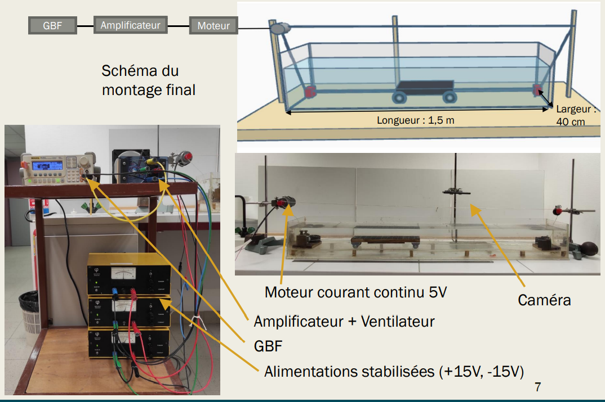
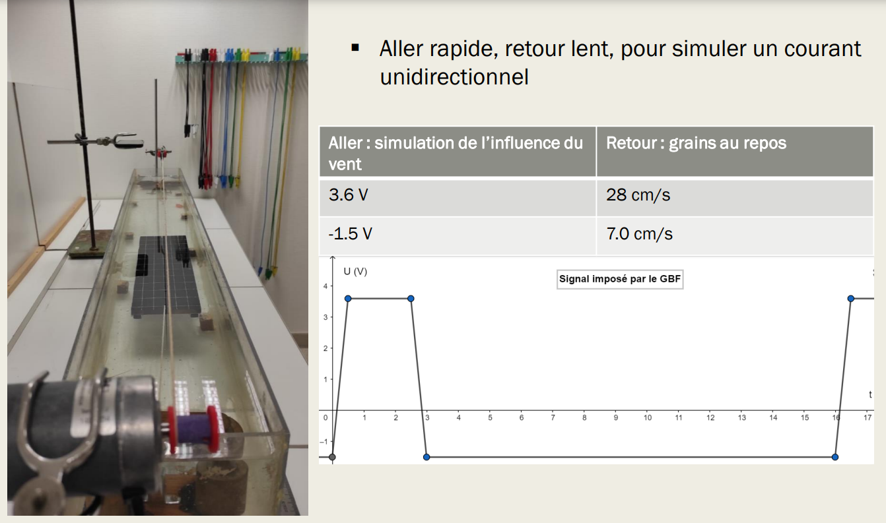
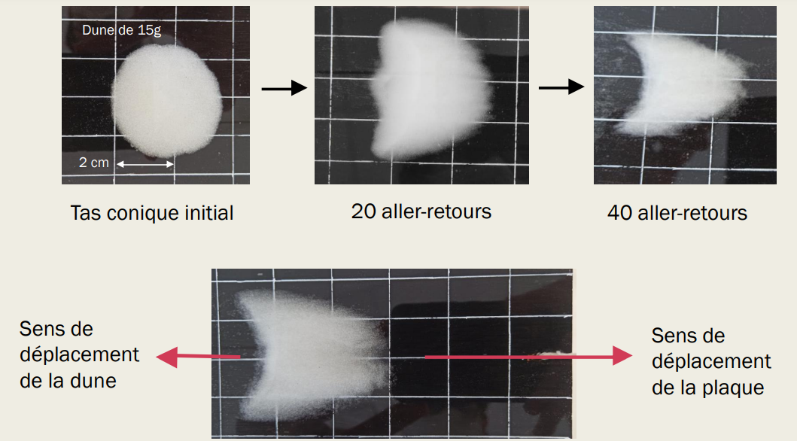

L’existence d’une longueur caractéristique nous permet donc d’affirmer qu’il est possible d’étudier des barkhanes à petite échelle. Cette longueur caractéristique permet de faire le lien entre les différentes échelles. Ainsi, en redimensionnant nos dunes centimétriques par ldrag, on pourra les comparer aux dunes réelles. Pour former des dunes en laboratoire, il nous faut donc respecter deux principes :
Nous avons donc développé le montage suivant : Pour simuler un courant unidirectionnel, nous avons mis en place un système de plaque mouvante sur laquelle l’on dépose un tas de billes de verre de densité et de diamètre connus. L’utilisation de billes de verre nous permettait d’avoir des diamètres précis et ainsi travailler toujours avec les mêmes paramètres. Nous avons opté pour un tas initial conique facile à reproduire à l’identique pour avoir les mêmes conditions initiales. Notre objectif était donc de déplacer la plaque de manière asymétrique :aller rapide, retour très lent, simule le vent unidirectionnel. (37cm/s à l’aller, 6cm/s au retour ie environ 80 cm aller puis 80 cm au retour pour revenir à l’emplacement initial)

Le montage final est le résultat de nombreuses modifications que nous avons effectuées pour surmonter les divers problèmes rencontrés.
Dans le montage final, un GBF contrôle le mouvement de la plaque, par un signal amplifié par le système ci-contre. Le déplacement est permis par un système de courroie qui entoure l’aquarium, lié à un moteur commandé par un GBF. Un système amplificateur permet de faire l’intermédiaire et amplifier le signal. Une tension de signal positive fait avancer la plaque, un signal négatif la fait reculer. Nous avons choisi une vitesse de 37cm/s à l’aller, 6cm/s au retour ie environ 80 cm aller puis 80 cm au retour pour revenir à l’emplacement initial) ce qui nous permettait de former des dunes barkhanes suffisament rapidement pour que les manipulations ne soient pas trop chronophages. Cependant, même si il est difficile de faire le lien entre la vitesse de l’écoulement dans notre expérience et les dunes réelles, des vitesses plus lentes auraient été surement plus adaptées car, comme nous le verrons, nos vitesses de dunes semblent trop rapide.
 L’expérience est suivie en prenant des photos après chaque aller retour de la plaque. La plaque est quadrillée pour pouvoir ensuite mesurer le déplacement des dunes. Avec un logiciel de pointage, les dimensions caractéristiques et le déplacement sont mesurés. Une tentative de mesure de la hauteur avec un laser a échoué. On observe qu’après un court régime transitoire où il y a une forte érosion du tas conique initial, la forme de barkhane apparaît et la dune se met à perdre beaucoup moins de stable : régime permanent.
 Retour Sommaire Vers prochaine page